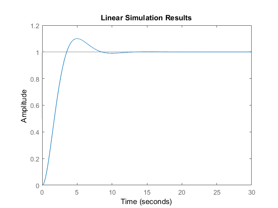
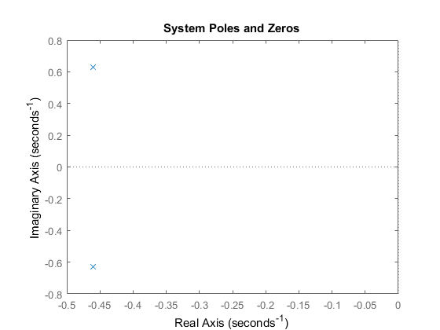
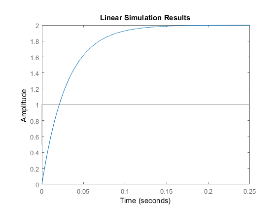
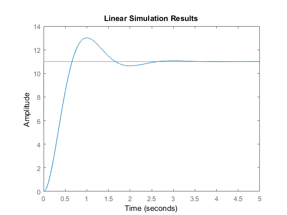
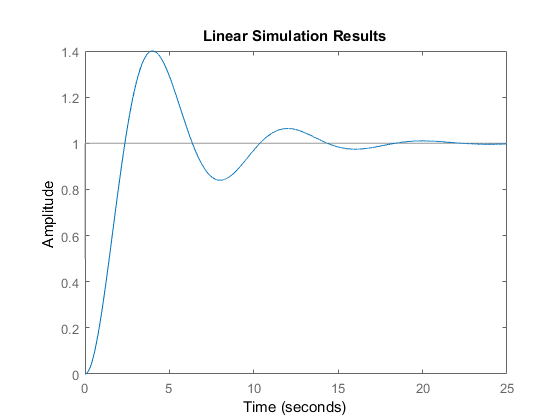

clc; clear; close all;
fprintf('------------------------------------------------------------------\n');
fprintf('Problem 20\n');
fprintf('------------------------------------------------------------------\n');
fprintf('Part a\n');
wn = 4;
dR = 3/8;
const1 = sqrt(1-dR^2);
Tp = pi/(wn*const1);
fprintf('Peak Time | %g seconds\n',Tp);
OS = exp(-(dR*pi/const1))*100;
fprintf('Overshoot | %g Percent\n',OS);
Ts = 4/(dR*wn);
fprintf('Settling Time | %g seconds\n',Ts);
phi = atan(dR/const1);
timeSR = @(t)(1 - (exp(-(dR*wn*t))*(cos(wn*const1*t) + ...
(dR/const1)*sin(wn*const1*t))));
Tr = (timeSR(0.90) - timeSR(0.10))/wn;
fprintf('Rise Time | %g seconds\n',Tr);
fprintf('------------------------------------------------------------------\n');
fprintf('Problem 23\n');
fprintf('------------------------------------------------------------------\n');
fprintf('Part b\n');
t = linspace(0,30,10000);
OS_23B = 1/10;
Tp_23B = 5;
zeta23b = (-log(OS_23B) / sqrt((pi^2) + log(OS_23B)^2));
wn23B = (pi/(Tp_23B*sqrt(1-zeta23b^2)));
sys = tf([(wn23B^2)],[1,(2*zeta23b*wn23B), wn23B^2]);
sys
inputResponse = heaviside(t);
figure()
lsim(sys,inputResponse,t);
[z1,p1] = zpkdata(sys);
z1 = cell2mat(z1);
p1 = cell2mat(p1);
fprintf('Zeros | %g\n',z1);
fprintf('Poles | %g\n',p1);
figure()
pzmap(sys);
title('System Poles and Zeros')
fprintf('------------------------------------------------------------------\n');
fprintf('Problem 32\n');
fprintf('------------------------------------------------------------------\n');
fprintf('Part a\n');
tA = linspace(0,0.25,10000);
sysA = tf([(200/3)],[1,(100/3)]);
fprintf('Transfer Function Model\n');
sysA
inputResponseA = heaviside(tA);
figure()
lsim(sysA,inputResponseA,tA);
fprintf('------------------------------------------------------------------\n');
fprintf('Part b\n');
fprintf('------------------------------------------------------------------\n');
tB = linspace(0,5,10000);
OS_B = 2/11;
Tp_B = 1;
zetab = (-log(OS_B) / sqrt((pi^2) + log(OS_B)^2));
wnB = (pi/(Tp_B*sqrt(1-zetab^2)));
sysB = tf([(wnB^2)],[1,(2*zetab*wnB), wnB^2]);
sysB
inputResponseB = 11*heaviside(tB);
figure()
lsim(sysB,inputResponseB,tB);
fprintf('------------------------------------------------------------------\n');
fprintf('Part c\n');
fprintf('------------------------------------------------------------------\n');
tC = linspace(0,25,10000);
OS_C = 2/5;
Tp_C = 4;
zetac = (-log(OS_C) / sqrt((pi^2) + log(OS_C)^2));
wnC = (pi/(Tp_C*sqrt(1-zetac^2)));
sysC = tf([(wnC^2)],[1,(2*zetac*wnC), wnC^2]);
sysC
inputResponseC = heaviside(tC);
figure()
lsim(sysC,inputResponseC,tC);
------------------------------------------------------------------
Problem 20
------------------------------------------------------------------
Part a
Peak Time | 0.847225 seconds
Overshoot | 28.0597 Percent
Settling Time | 2.66667 seconds
Rise Time | 0.300765 seconds
------------------------------------------------------------------
Problem 23
------------------------------------------------------------------
Part b
sys =
0.6069
----------------------
s^2 + 0.921 s + 0.6069
Continuous-time transfer function.
Zeros |
Poles | -0.460517
Poles | -0.460517
------------------------------------------------------------------
Problem 32
------------------------------------------------------------------
Part a
Transfer Function Model
sysA =
66.67
---------
s + 33.33
Continuous-time transfer function.
------------------------------------------------------------------
Part b
------------------------------------------------------------------
sysB =
12.78
---------------------
s^2 + 3.409 s + 12.78
Continuous-time transfer function.
------------------------------------------------------------------
Part c
------------------------------------------------------------------
sysC =
0.6693
-----------------------
s^2 + 0.4581 s + 0.6693
Continuous-time transfer function.
    